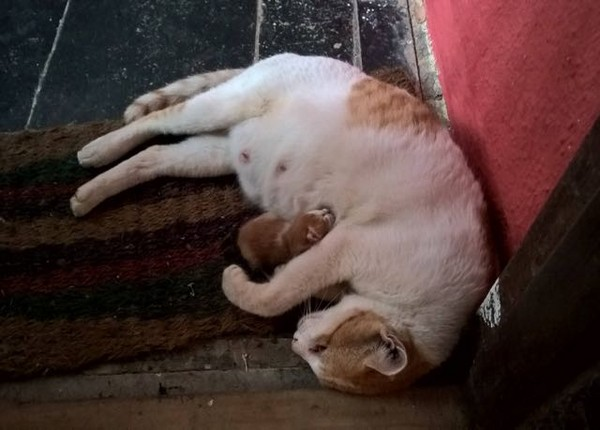
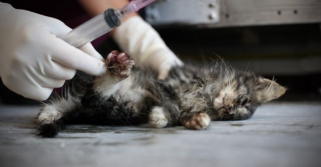

流浪動物
成因

流浪動物來源
1、飼主因為寵物隨地大小便、對客人吠叫、打翻垃圾桶甚至咬壞你的鞋，因此送養寵物或是遺棄。
2 、大部分的寵物狗嗅覺早已退化許多，尤其是從小生活環境就只有主人家的狗狗，因此飼主要帶狗狗出門時最好還是能用鍊子套住狗狗。
3、根據統計母狗懷孕的時間約三個月，一年約可以生下三十隻，因此增加流浪貓狗的數量。
4、非法繁殖場一直販賣幼犬來謀取暴利，當年老的母狗因為沒有利用的價值而被處以安樂死，或隨意的將牠放生，成為流浪狗。
非人道處理方式

安樂死
視動物的情況，看動物是否可以直接注射安樂死的藥物。如果動物過於緊張，不容易靜脈注射安樂死的藥物。則應使用Ketamine，Ketamine是一種肌肉注射的麻醉劑，可使動物鎮靜麻醉，讓執行安樂死人員容易進行安樂死的靜脈注射，靜脈注射使用的藥劑為Pentobarbital，可直接抑制中樞神經系統讓動物昏迷，迅速停止心跳而快速死亡。
另一種心臟穿刺法，就是直接從胸腔用注射器刺入胸腔，到達心臟，將安樂死藥Pentobarbital注入心臟。動物如果亂動，心臟不容易一次刺到，你可以看到有些獸醫師連刺兩、三次都沒有刺到心臟，造成動物更嚴重的痛苦。有很多沒有刺中心臟的動物，藥劑注入胸腔，常常意識清楚，無法呼吸，因胸腔被麻醉，無法運動，窒息而死。